This page was generated from notebooks/L2/PlottingStyles.ipynb.


[1]:
import matplotlib.pyplot as plt
import numpy as np
import matplotlib.colors as mcolors
from matplotlib.patches import Rectangle
# Fixing random state for reproducibility
np.random.seed(19680801)
def plot_scatter(ax, prng, nb_samples=100):
"""Scatter plot."""
for mu, sigma, marker in [(-.5, 0.75, 'o'), (0.75, 1., 's')]:
x, y = prng.normal(loc=mu, scale=sigma, size=(2, nb_samples))
ax.plot(x, y, ls='none', marker=marker)
ax.set_xlabel('X-label')
ax.set_title('Axes title')
return ax
def plot_colored_lines(ax):
"""Plot lines with colors following the style color cycle."""
t = np.linspace(-10, 10, 100)
def sigmoid(t, t0):
return 1 / (1 + np.exp(-(t - t0)))
nb_colors = len(plt.rcParams['axes.prop_cycle'])
shifts = np.linspace(-5, 5, nb_colors)
amplitudes = np.linspace(1, 1.5, nb_colors)
for t0, a in zip(shifts, amplitudes):
ax.plot(t, a * sigmoid(t, t0), '-')
ax.set_xlim(-10, 10)
return ax
def plot_bar_graphs(ax, prng, min_value=5, max_value=25, nb_samples=5):
"""Plot two bar graphs side by side, with letters as x-tick labels."""
x = np.arange(nb_samples)
ya, yb = prng.randint(min_value, max_value, size=(2, nb_samples))
width = 0.25
ax.bar(x, ya, width)
ax.bar(x + width, yb, width, color='C2')
ax.set_xticks(x + width, labels=['a', 'b', 'c', 'd', 'e'])
return ax
def plot_colored_circles(ax, prng, nb_samples=15):
"""
Plot circle patches.
NB: draws a fixed amount of samples, rather than using the length of
the color cycle, because different styles may have different numbers
of colors.
"""
for sty_dict, j in zip(plt.rcParams['axes.prop_cycle'](),
range(nb_samples)):
ax.add_patch(plt.Circle(prng.normal(scale=3, size=2),
radius=1.0, color=sty_dict['color']))
ax.grid(visible=True)
# Add title for enabling grid
plt.title('ax.grid(True)', family='monospace', fontsize='small')
ax.set_xlim([-4, 8])
ax.set_ylim([-5, 6])
ax.set_aspect('equal', adjustable='box') # to plot circles as circles
return ax
def plot_image_and_patch(ax, prng, size=(20, 20)):
"""Plot an image with random values and superimpose a circular patch."""
values = prng.random_sample(size=size)
ax.imshow(values, interpolation='none')
c = plt.Circle((5, 5), radius=5, label='patch')
ax.add_patch(c)
# Remove ticks
ax.set_xticks([])
ax.set_yticks([])
def plot_histograms(ax, prng, nb_samples=10000):
"""Plot 4 histograms and a text annotation."""
params = ((10, 10), (4, 12), (50, 12), (6, 55))
for a, b in params:
values = prng.beta(a, b, size=nb_samples)
ax.hist(values, histtype="stepfilled", bins=30,
alpha=0.8, density=True)
# Add a small annotation.
ax.annotate('Annotation', xy=(0.25, 4.25),
xytext=(0.9, 0.9), textcoords=ax.transAxes,
va="top", ha="right",
bbox=dict(boxstyle="round", alpha=0.2),
arrowprops=dict(
arrowstyle="->",
connectionstyle="angle,angleA=-95,angleB=35,rad=10"),
)
return ax
def plot_figure(style_label=""):
"""Setup and plot the demonstration figure with a given style."""
# Use a dedicated RandomState instance to draw the same "random" values
# across the different figures.
prng = np.random.RandomState(96917002)
fig, axs = plt.subplots(ncols=6, nrows=1, num=style_label,
figsize=(14.8, 2.8), layout='constrained')
# make a suptitle, in the same style for all subfigures,
# except those with dark backgrounds, which get a lighter color:
background_color = mcolors.rgb_to_hsv(
mcolors.to_rgb(plt.rcParams['figure.facecolor']))[2]
if background_color < 0.5:
title_color = [0.8, 0.8, 1]
else:
title_color = np.array([19, 6, 84]) / 256
fig.suptitle(style_label, x=0.01, ha='left', color=title_color,
fontsize=14, fontfamily='DejaVu Sans', fontweight='normal')
plot_scatter(axs[0], prng)
plot_image_and_patch(axs[1], prng)
plot_bar_graphs(axs[2], prng)
plot_colored_lines(axs[3])
plot_histograms(axs[4], prng)
plot_colored_circles(axs[5], prng)
# add divider
rec = Rectangle((1 + 0.025, -2), 0.05, 16,
clip_on=False, color='gray')
axs[4].add_artist(rec)
if __name__ == "__main__":
# Set up a list of all available styles, in alphabetical order but
# the `default` and `classic` ones, which will be forced resp. in
# first and second position.
# styles with leading underscores are for internal use such as testing
# and plot types gallery. These are excluded here.
style_list = ['default', 'classic'] + sorted(
style for style in plt.style.available
if style != 'classic' and not style.startswith('_'))
# Plot a demonstration figure for every available style sheet.
for style_label in style_list:
with plt.rc_context({"figure.max_open_warning": len(style_list)}):
with plt.style.context(style_label):
plot_figure(style_label=style_label)
plt.show()
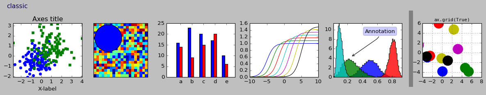
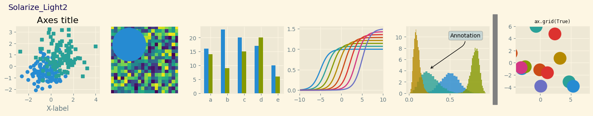
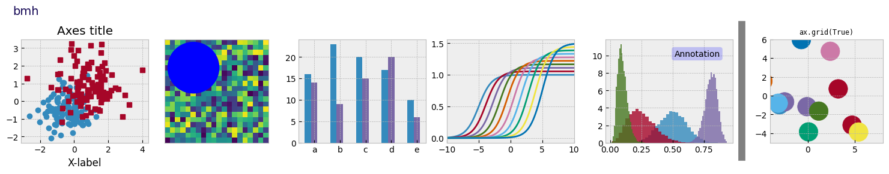
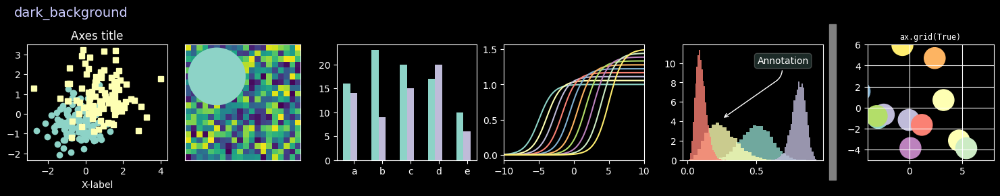
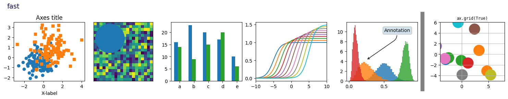
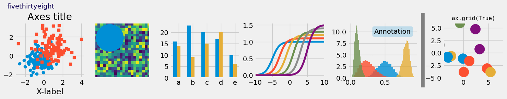
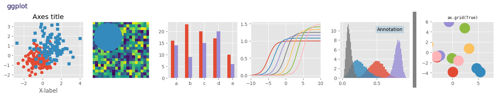
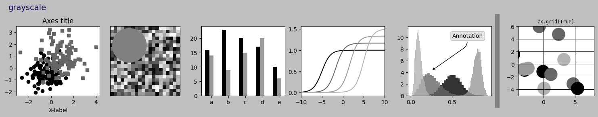
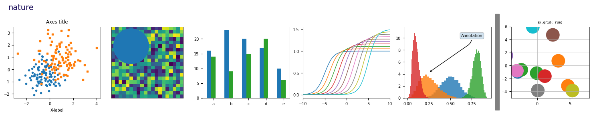
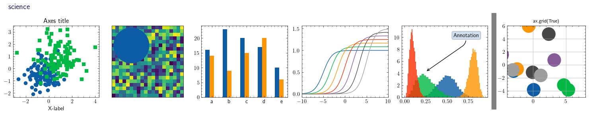
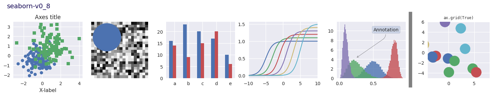
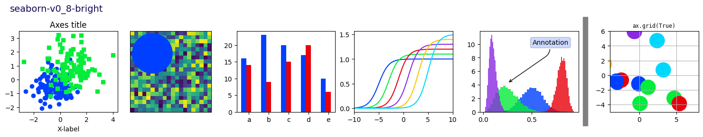
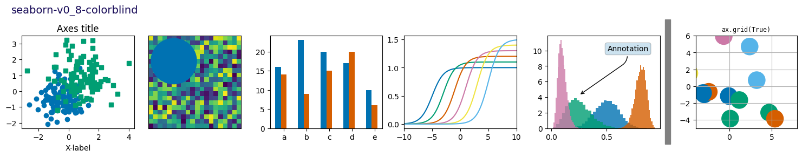
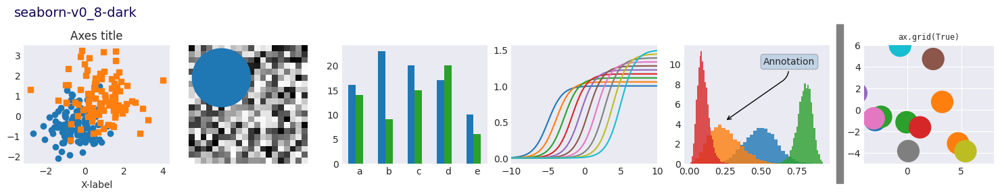
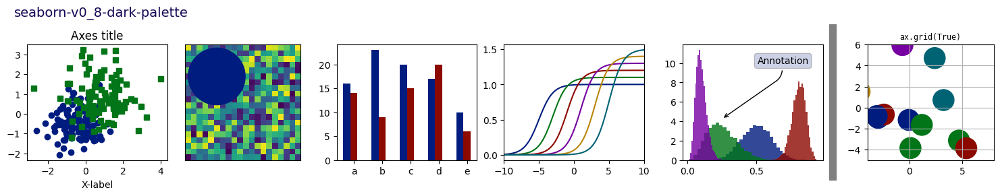
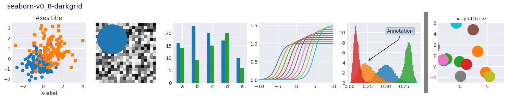
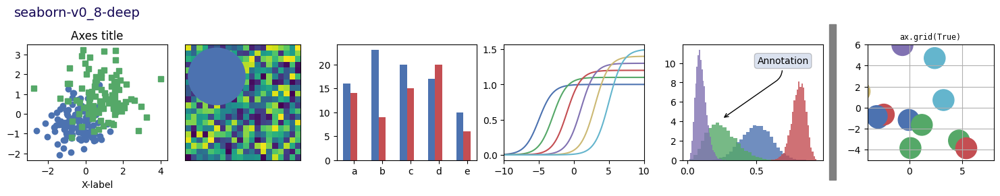
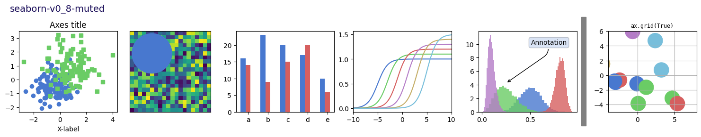
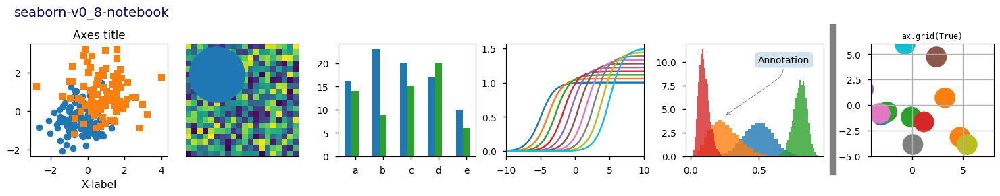
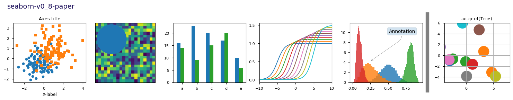
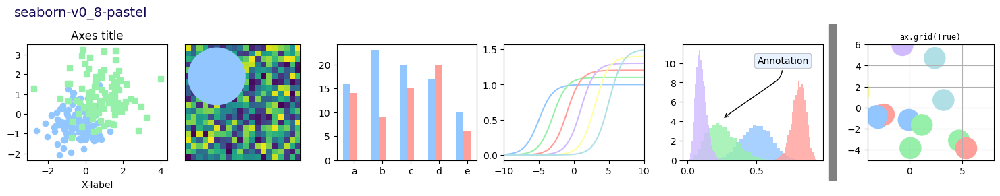
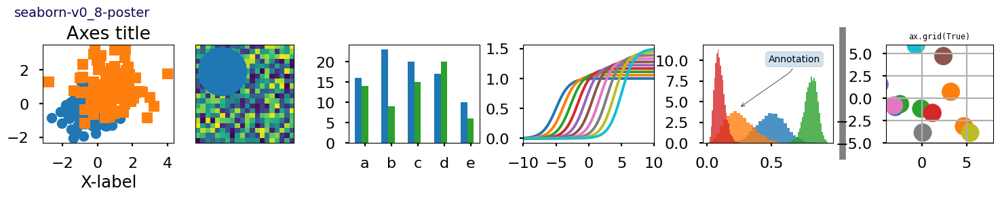
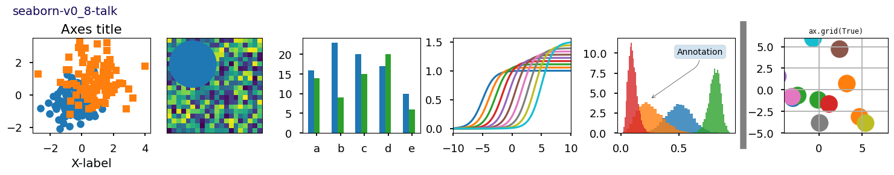
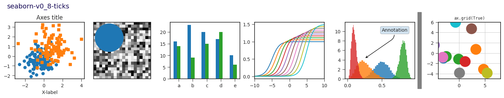
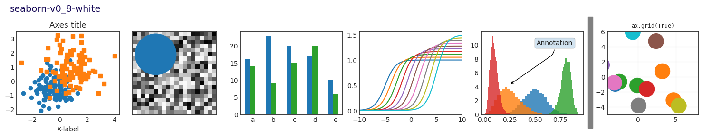
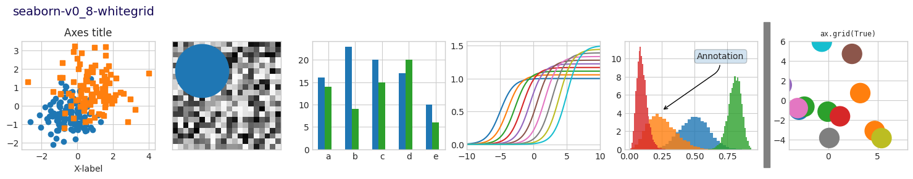
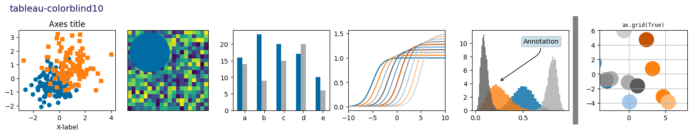